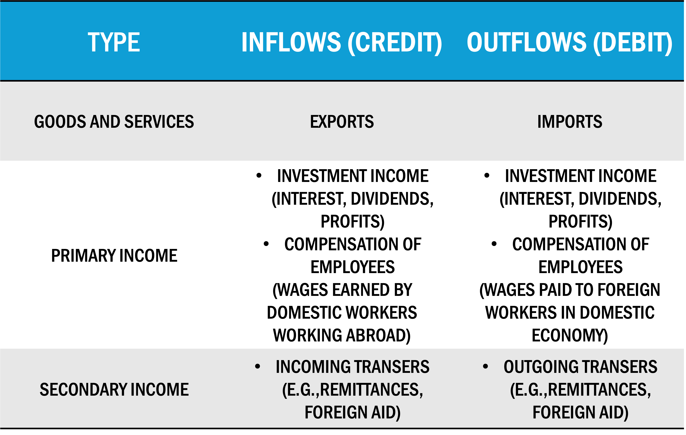
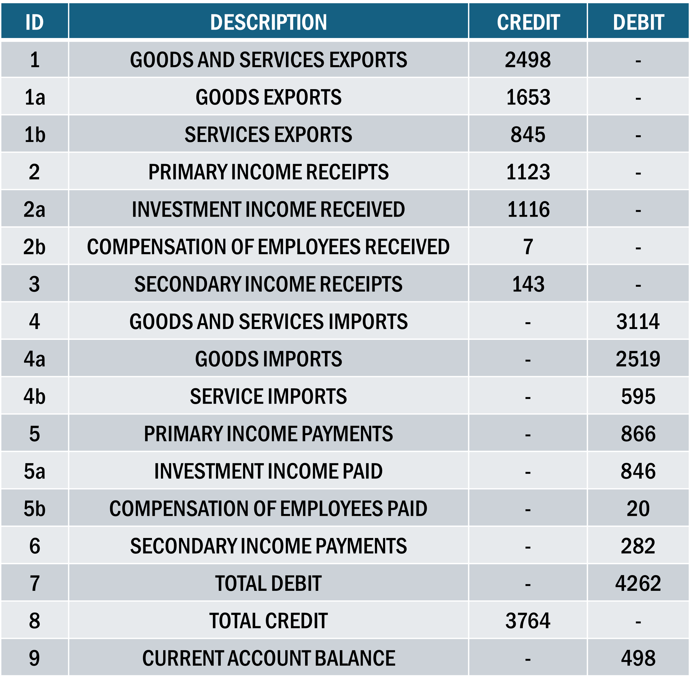
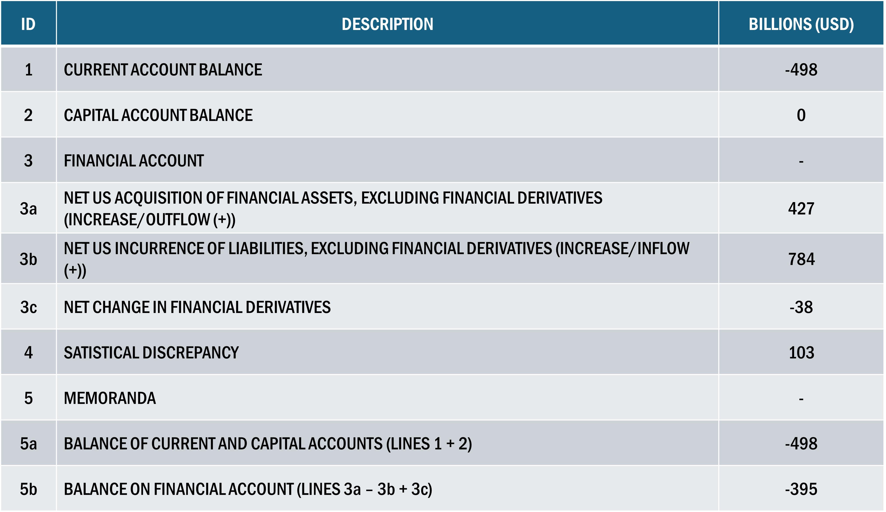
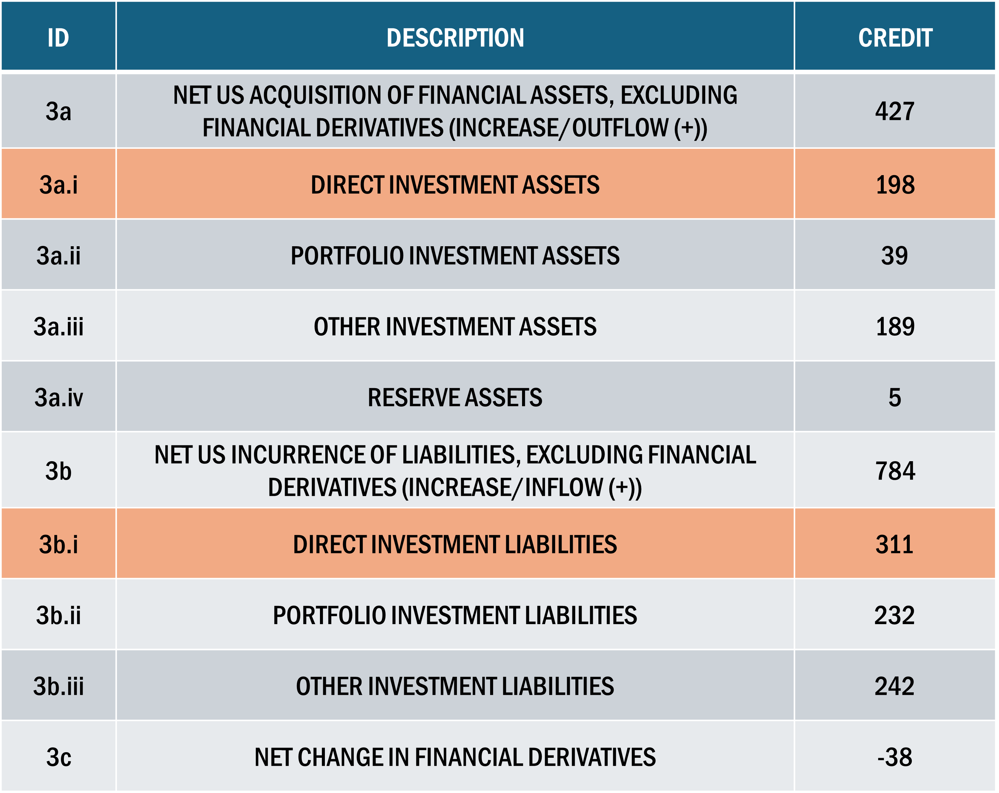

Global Finance | Balance of Payments I
EC 380 - International Economic Issues
2024
Recap
Previously
- With globalization comes greater economic interdependence and larger risk of contagion effects once crises crop up
Today
Explore the system used to track country’s international transactions
Establish relationship between domestic investment, domestic savings, and international flow of goods, services, and financial assets
Examine the consequences of international indebtedness
Layout
There are three separate accounts for the Balance of Payments:
- Current Account
- Capital Account
- Financial Account
Account Types
Current Account Basics
Definition: Records the transaction of goods, services, investment income, and unilateral transfers between residents of a country and the rest of the world
Exports & Imports
Income on Equities
Income on Debt-related Assests
Repatriated Income by Multinational Enterprise (MNE) firms
Current Account Inflows
Current Account Inflows are monetary inflows, exchanged for goods/services outflows
Country current account surplus implies CA Inflows are greater than CA Outflows
\(\Rightarrow\) Outflow of goods, services, investment income, etc. of country are greater than inflows
Capital & Financial Accounts
Capital Account:
Records transactions of highly specialized financial assets and liabilities
- Gifts of an embassy
- Acquisition of land for embassy use
Financial Account:
Tracks capital flows between economies, usually long-lasting items relative to goods or services
- Foreign Investment
- Purchase or sales of foreign stock & bonds
- International bank lending
CA: Trade Balance
The trade balance is total exports minus total imports
- A trade balance deficit is a case in which total imports of goods and services outweighs total exports
- It is possible to maintain a deficit in goods and surplus in srevices, but normally the net amount of both is considered
For the US, the 2023 USD trade balance was $3,053.5 bn minus $3,8269 bn, or $951.2 bn.
Because the value is negative, the United States had a trade deficit
CA: Breakdown
Current Account measures all current, non-financial transactions between a nation and the rest of the world
Goods and Services trade (Trade Balance)
Earned income paid abroad and received from abroad (Primary Income)
International transfer payments (Secondary Income)
All three of these items have credit and debit components in BoP and in the construction of CA balance
CA: Breakdown
CA: Breakdown
Investment income items not to be confused with the flow of investment capital used to buy a business or company shares
Investment income is the income received or paid on the existing investments
CA: Primary Income
Useful to think of primary income as payments or receipts for use of financial capital
If a US company invests in Mexico’s stock market, the initial investment will not show up in the current account but will be included in the financial account.
Subsequent flow of dividends back to the US company will be counted in the United States as income received and in Mexico as income paid.
If US company operating in Mexico pays wages from its home in the US, the wages are included in the primary income category of the current account and are recorded as a receipt by Mexico and payment by the US.
CA: Secondary Income
Secondary Income includes payments made that are not in exchange for a good or service
- Foreign aid, or the remittances (transfer of wages earned in one country to residents of another country) of immigrants temporarily residing in another country
In US, payments are small relative to the overall current account
Transfers are sometimes very important to developing countries receiving large volumes of either foreign aid or remittances from their citizens working abroad
CA: Calculate Balance
CA: US Case
The US current account deficit has been trending downards for the past 50 years
We will explore the causes and consequences of large current account deficits later, but here it should be noted that a current account deficit is not simply a sign of weakness
Rapid economic growth in US raised income, increased spending power means greater imports
CA: US Case
Foreign incomes did not rise as rapidly
Current account deficit in 1990s was a sign of relative US economic strength
Deficit is not sustainable in the long-run and could create serious future problems
Financial Account
Financial Account Basics
Main record of financial flows between countries
Covers all types of financial assets that can be bought and sold internationally
Divided into three main categories, each with many subcomponents.
The three main categories are:
The Net Acquisition of Financial Asset
The Net Incurrence of Liabilities
Changes in Financial Derivatives
Financial Account Basics
Assets include bank accounts, stocks and bonds, real property such as factories, businesses, real estate, and monetary gold and foreign currencies
Positive Net Acquisition of Financial Assets implies residents buying more foreign assets than they are selling
Positive Net Incurrence of Liabilities means foreigners purchasing more of home country’s assets than they are selling
Financial Derivatives are assets with a value that is derived from the value of some other asset
- Such as commodity prices or exchange rates, or one of many other possibilities
Financial Account: Derivatives
Essentially packaged as financial options (puts/calls) that allow for hedging against risk
For example, farmers used them to protect against fluctuations in agricultural prices
Wheat farmers might sign a contract in March to sell their crop in September at a price agreed when the contract is signed.
The value of the contract depends on the fluctuation in wheat prices.
If prices go above the agreed price, the contract becomes more valuable to the buyer because they have a guaranteed lower price, and vice-versa if prices fall over the summer
The contract is a derivative since its value depends on the price of wheat
Financial Account
Presents the flow of assets during the year and not the stock of assets that have accumulated over time
All flows are “net” changes rather than “gross” changes
Net changes are the differences between assets sold and assets bought, as when US residents purchase shares in the Mexican stock market while simultaneously selling Mexican bonds
Net change in US-owned assets is difference between the value of the shares purchased and the bonds sold
If the stocks and bonds are equal in value, then the net change is zero
US Balance of Payments (2019)
Financial Account
Payments abroad to buy financial assets are a credit
Payments received from abroad for selling home country assets (net inccurrence of liabilities) are a debit
Debits are viewed as the inflow received when assets are sold to foreigners
Credits are the payment outflow when financial assets are purchased by home country residents
Conceptually similar to the credits and debits of exports and imports
Interdependence
Interdependence
The Current, Capital, and Financial Accounts are interdependent
The Current and Capital Accounts measure the flows of goods, services, and transfers between a country and the rest of the world
The Financial Account measures the net flows of asset purchases and sales
Since each element in the Current Account must include a financial transaction:
- Current plus Capital Account must equal the Financial Account
Interdependence of Accounts
A negative Current plus Capital account \(\Rightarrow\) net borrowing by the home country
It must show up in the Financial Account as net borrowing as well
In 2019, the US lent abroad through the net acquisition of financial assets worth $427 bn
It also incurred liabilities or borrowed $784 bn from foreigners
Balance on financial account is the amount lent minus the amount borrowed plus the net change in derivatives
\[ \text{Financial Account} = 427 - 784 + (-38) = 395 \]
Statistical Discrepancy
Why is Current + Capital \(\; \neq \;\) Financial?
Statistical Discrepancy
Why is Current + Capital \(\; \neq \;\) Financial?
It is impossible to record all transactions and ensure that they are accurately measured
The amound of net lending or borrowing on the current and capital accounts rarely matches the amount implied by the financial account balance
The Statistical Discrepancy is the size of the measurement error
While the Current and Financial Accounts are mirror images of each other, a large share of a nation’s gross financial account transactions is not in response to the current account of flows of goods, services, or income
Discrepancy Example
Suppose a London-based company buys stock in a Chilean firm, and lends money to the government of Thailand
Note: This has nothing to do with the movements of goods and services. These are purely financial transactions and must have a net value of zero.
Net value of zero is because the purchase of an asset is simultaneously the sale of an asset of equal value
- If a Canadian citizen buys shares in the Mexican stock market (capital outflow), they must sell Canadian dollars or some other asset (capital inflow)
As a result, the financial account is a complete picture of net flows of financial assets during the year
Financial Risks
Certain types of financial flows introduce instability/risk
Some financial flows are very mobile, representing short-run tendencies
Financial flows are often vehicles for transmitting a financial crisis from one country to another
The degree of mobility of financial flows and the potential of some flows to introduce a large element of volatility into an economy have turned the type of flows that a country receives into a major issue
Financial Subcomponents

The 2019 financial account for the US, divided into seven subcategories representing the main components of outflows and inflows, or net assets acquired (outflow) and net liabilities incurred (inflow)
Financial Subcomponents

3a.i represents the purchase of real property outside the US by US residents and business
3b.i represents asset purchases in the US by foreign residents and businesses
Financial Subcomponents

In general, FDI varies considerably and is often linked to mergers
Once made, however, FDI is probably less likely to leave a country, particularly when compared to the next category of items in lines 3a.ii, 3a.iii, 3b.ii, 3b.iii
Summary
Recapping
Contents of Balance of Payments indicate net flows
Financial Accounts should balance with Current + Capital
Next time
Macroeconomy implications of BoP state
International Debt considerations
Inestment Position
Introduce Exchange Rates
EC380, Lecture 07 | Balance of Payments I